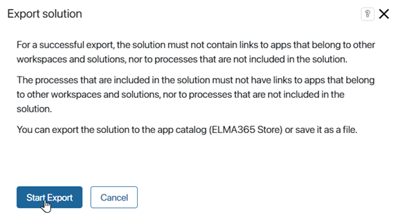
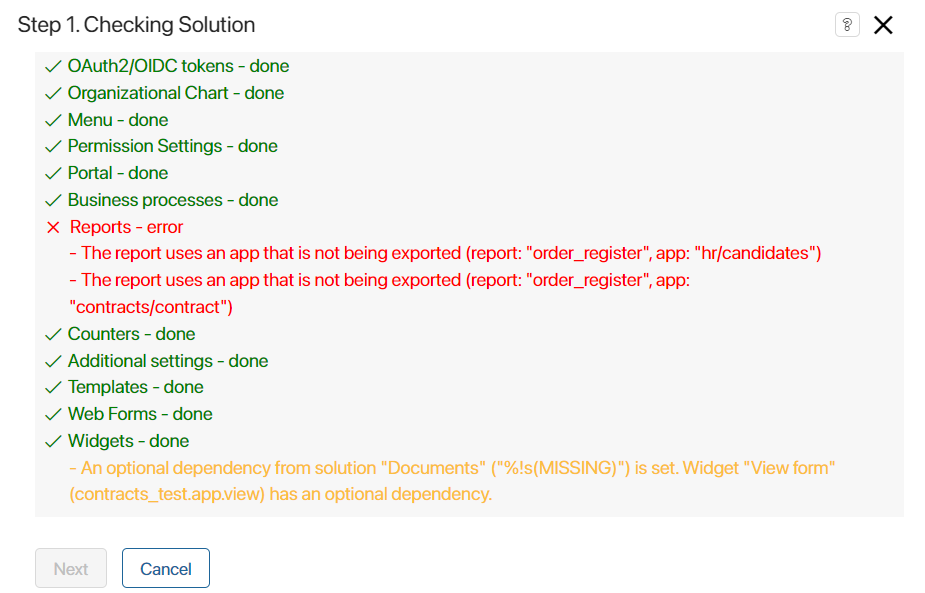
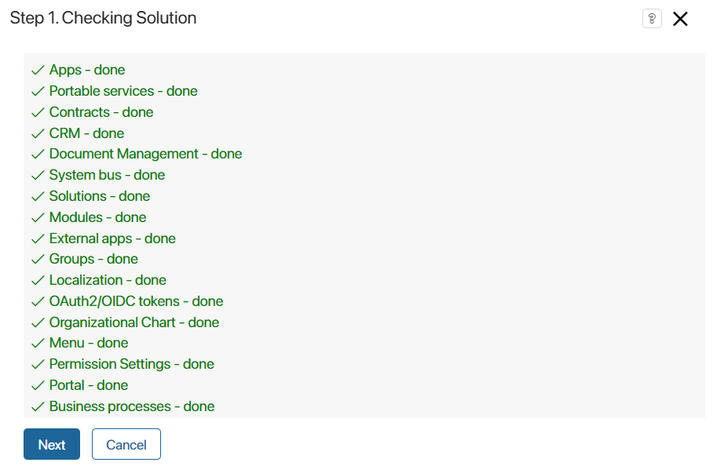
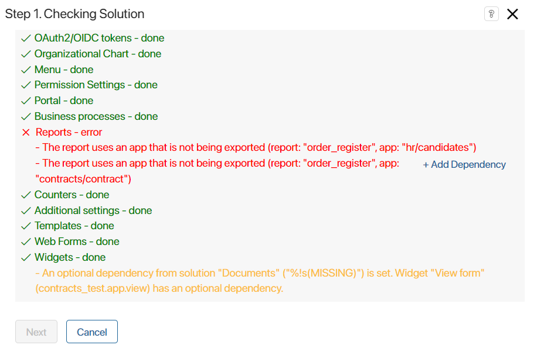
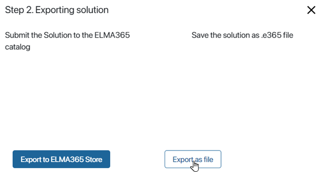
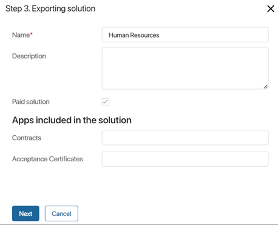
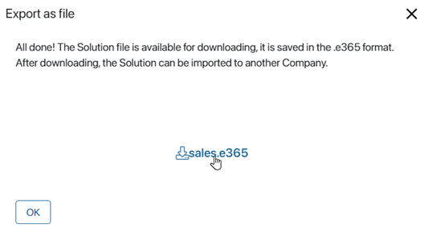

If you export the solution to an .e365 file, other users will only be able to install it in their company by downloading the provided file from their local computer.
Please note that before exporting the solution, you can enable fields to be added to the forms of the locked app as part of it. To do this, configure the context extension app.
Start export
Export the solution to a file in one of two ways:
- On the Administration > Manage Solutions page, in the solution page, click the three dots icon and select Export.
- On any system page, in the left menu, click the icon and in the opened window click Solutions. Then to the right of the solution name, click Administration and select Export.

Then in the window that appears, click Start Export.

Further export of the solution is performed in several steps.
Step 1: Solution checking
The first step checks for links to workspace components that are not part of the solution, as well as to global system objects such as organizational chart, processes, system workspaces and apps, modules, and so on.
When exporting a free solution, you will see a notification saying that after importing the solution to another company, the users will be able to edit the module that forms part of the solution.
If the check reveals links, you can export the solution only after you have removed them. For example, if the business process solution uses an organizational chart item, you need to change the process swimlane settings manually.
You will also see a warning if the scripts in the solution contain optional dependencies from other workspaces or modules. Such dependencies do not prevent the export, but the correct operation of the scripts is not guaranteed during the subsequent import of the solution.

If there are no links to global objects, you will see a notification that the check is complete. Click Next to continue exporting.

Set dependencies between solutions
If you have created several solutions and linked them to each other, you can export each of them separately. To do this, you can add dependencies between one solution and another when exporting.
For example, you have developed two solutions: Sales and Contract Management. In this case, Contract Management is linked with components of the other solution: properties have been added that refer to apps from the other solution, the business processes use groups associated with workspaces from the Sales solution.
Suppose you need to import these solutions into another company, preserve all the added links, and ensure that they work correctly. In such a case, first transfer the Sales solution, which is independent and does not refer to components of other solutions.
Then you can export Contract Management. To do this, click +Add Dependency against the found error at the solution checking step.

You will be able to continue exporting and then import the uploaded .e365 file to another company.
You can only import to companies that have installed the solution on which the solution in the file depends. For this reason, it is recommended to export solutions with added dependencies to the .e365 file and not to use export to BRIX Store.
Please note, that the installed dependencies only apply to the currently exported solution file. When exporting again, the dependencies will need to be installed again.
You might need to add a dependencies option when you develop several complex solutions referring to each other simultaneously. In this case, you need to export these solutions in separate files, for example, to finalize them in a test environment.
Step 2: Select an export option
In the opened window, select the Export as file option.

Step 3: Fill in the solution information
In the opened window, fill in the fields.

- Name*. Specify the name of the solution.
- Description. Describe the solution functionality and its features.
- Paid solution. Use this option only if you plan to upload a paid solution to the BRIX Store. After being imported to another company, the solution with this option enabled is available only for a limited period of 14 days. After that, the solution will be locked, users will not be able to work with it.
Please note that if you export a previously installed paid business solution to a company, the option will be enabled by default.
- Apps included in the solution. Give a brief description of the apps included in the solution.
Click Next to proceed with the export.
The solution will be exported to a file. To download the file to your local computer, click the link in the window that appears.

The file can then be imported into another company.
Found a typo? Select it and press Ctrl+Enter to send us feedback